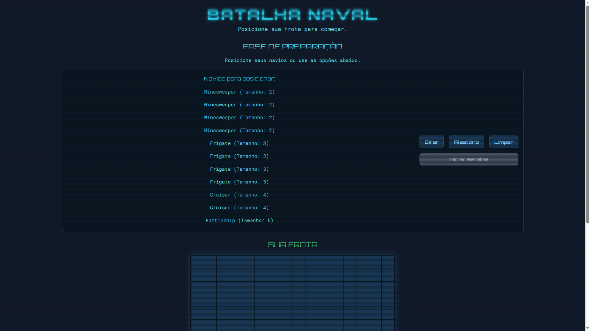
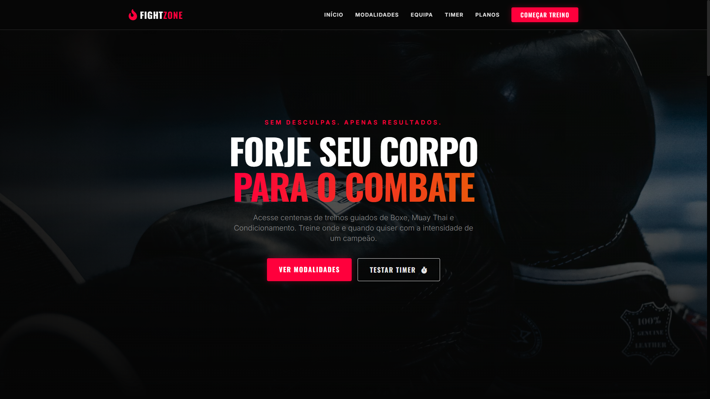
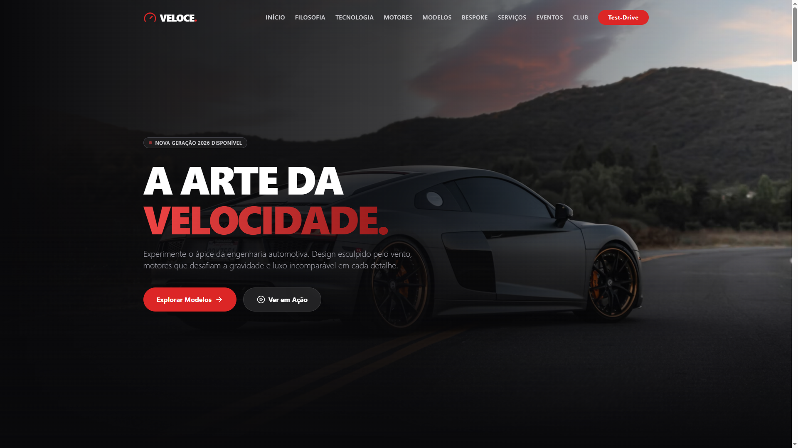

System.query("SELECT * FROM portfolio.projects");
Uma coleção abrangente das minhas criações codificadas, sempre estou atualizando o site com novas criações.


Site // Academia FightZone

Procura ver mais código em estado bruto?
Acessar Repositório GitHub